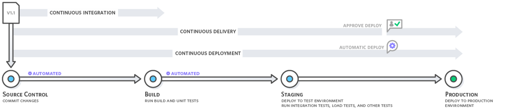

Veille technologique - ENI Ecole
Présenté par Baptiste Foucher - Le 08 janvier 2018
CONTINUOUS
DEPLOYMENT

Cette page web sert de démonstration à la création d'un pipeline de Continuous Deployment.
Ce pipeline se déclenche après un commit sur GitHub, et déploie le site sur une instance Amazon EC2.
Les services Amazon utilisés sont via AWS CodeDeploy et AWS CodePipeline.
Problématique
- Faire tester les modifications rapidement par le client ou les utilisateurs
- Proposer la nouvelle version rapidement aux utilisateurs
- Avoir la possibilité de revenir sur une ancienne version facilement
- Être capable de surveiller mon application
Gains
- Cycles de mise en production accélérés
- Réponse rapide aux sollicitations du client
- Retours rapides du client sur les nouvelles fonctionnalités
- Favorise la couverture du code par des tests
- Limite les risques et le stress dus à une mise en production
- Le code est testé plus efficacement, plus souvent, et les bugs sont remontés plus tôt
- Améliore la qualité de l’application
- Réduction des coûts, membres concentrés sur leurs tâches et automatisation des processus
- Collaboration développeurs et opérationnels accrue
- Permet une surveillance efficace de l’application
Quelques exemples de sociétés utilisant une forme de déploiement automatisée
| Nom |
Heure |
Message |
| Baptiste |
12:17 |
Mise en place - Veille technologique |